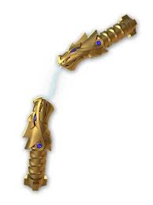

Attributes
- Shoots Lightning
- Summons Fighter Jet
- Made of Gold
- Stop hitting yourself!!!
History
The nunchucks of lightning are the primary weapon of Jay, the blue ninja. It was created in the realm of the Oni and Dragon and used by the first spinjitzu master to create Ninjago. In the battle of brothers, this weapon was wielded by Wu against Garmadon. Following the battle, Wu hid this weapon in the floating sky islands surrounded by thunderstorms and guarded by a lighning embued dragon. Jay retrieved this weapon during the ninja's escapade to reclaim the golden weapons. Jay holds onto this weapon until the end of season 1 where the four ninja give their golden weapons to Garmadon to defeat the Great Devourer. It, along with the other three golden weapons, is forged into the Megaweapon by Garmadon following the deafeat of the Great Devourer.